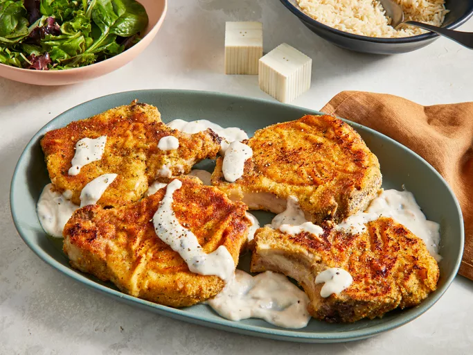

Baked Pork Chops
- Baked Pork Chops
- When you're in need of an easy and family-friendly dinner that doesn't require tons of crazy ingredients, you can always turn to baked pork chops. Breaded and baked pork chops are super simple to throw together, and they're basically foolproof.

Ingredients
- 6 thick cut pork chops
- 1 teaspoon garlic powder
- 1 teaspoon seasoning salt
- 2 egg, beaten
- ¼ cup all-purpose flour
- 2 cups Italian-style seasoned bread crumbs
- 4 tablespoons olive oil
- 1 (10.5 ounce) can condensed cream of mushroom soup
- ½ cup milk
- ⅓ cup white wine
Steps
- Gather all ingredients.
- Preheat the oven to 350 degrees F (175 degrees C).
- Season pork chops with garlic powder and seasoning salt. Place beaten eggs in a small bowl. Dredge pork chops lightly in flour; dip into beaten egg, then press into bread crumbs to coat both sides.
- Heat oil in a medium skillet over medium-high heat. Add breaded pork chops and cook until golden brown, about 5 minutes per side; transfer to a 9x13-inch baking dish and cover with foil.
- Bake in the preheated oven for 1 hour.
- Meanwhile, mix condensed soup, milk, and white wine in a medium bowl until well combined.
- Pour soup mixture over pork chops.
- Replace the foil, and continue to bake for another 30 minutes.
- Serve hot and enjoy!